公开效果示例：为便于 GitHub 展示，原帖签名参数和本机路径已清理；内容仅用于演示 Skill 输出结构，请通过原帖链接查看最新内容。
本文整理自小红书公开作者自述，仅供个人面试研究。内容不代表公司官方流程；原帖可能更新或删除。筛选依据是帖子是否包含与目标方向相关的个人面试经历、流程或实际问题，不对作者身份和陈述作独立背书。
images/bg：9本商科，之前在tts实习过，0产品经验 tl：周一约面，周三一面过，周四二面被告知要横向，周五收到拒信 1️⃣面： 1. 英文自我介绍 2. 讲一个之前实习做的项目，负责的工作内容 3. 要召回失活用户，怎么分析和实施 4. 用户增长主要看什么指标 5. 比较Email、SMS和Push，各自有什么特点，怎么设计推送策略 6. 基于用户体验视角，端外推送渠道会考虑哪些问题 7. 讲一个字节的产品在用户视角的优缺点 2️⃣面： 1. 自我介绍 2. 讲一讲push需要看什么指标 3. 如果你是小红书的产品经理，设计push会考虑往哪个方向拓展 4. 微信近半年有哪些功能的更新 5. 你觉得为什么朋友圈互动通知要改版 6. 假如你负责小红书评论区热评设计，要考量哪些因素 7. 为什么想来做产品 8. 如果产品与分析类二选一你会怎么选，为什么 反思：没过的原因大概率是无产品经验+竞争对手履历更丰富，其次二面部分开放性问题的回答覆盖不够 #互联网大厂 #字节跳动 #互联网大厂实习 #tiktok #产品经理 #面经
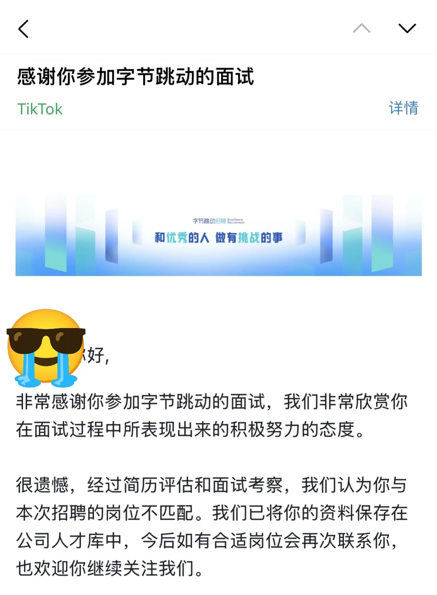
< 感谢你参加字节跳动的面试 TikTok 详情 字节跳动招聘Oone 和优秀的人做有挑战的事 好， 非常感谢你参加字节跳动的面试，我们非常欣赏你 在面试过程中所表现出来的积极努力的态度。 很遗憾，经过简历评估和面试考察，我们认为你与 本次招聘的岗位不匹配。我们已将你的资料保存在 公司人才库中，今后如有合适岗位会再次联系你， 也欢迎你继续关注我们。
OCR 由机器生成，可能存在识别错误，请以原图为准。
images/分享一下面经攒攒人品！是27届byteintern暑期岗，面经如图！ 一点感受： 1⃣️ 这次暑期面试跟之前的日常实习面试相比，没那么看重所谓“实操能力”，很多问题是在考察思辨能力，且个人行为向的问题占比很大。感觉比起单纯的会不会做，更重要的是怎么做以及他们喜不喜欢这个人。 2⃣️ 数下来参加过的字节面试已经两位数了、、、根据面试以及在里面实习的经验来看，最大的感受就是他们喜欢的人才画像可能是【敏捷】/【聪明】的。面试的时候反应要快，作答的时候强迫自己分点（感觉哪怕是一模一样的话，分点来讲就会看起来更聪明一些哈哈哈哈哈。 3⃣️ 跟近期参加的一些其他面试相比，字节的面试体验居然是最好的。可能是因为面试官都比较年轻吧，有在跟朋友讲话的感觉，每场面试都很尊重候选人的意见，愿意听你表达，态度也很温柔。昨天参加了一场登味很重的面试，真的需要很久来缓解、、、 就说这些，祝大家好运！ #实习 #互联网大厂实习 #面经 #找实习
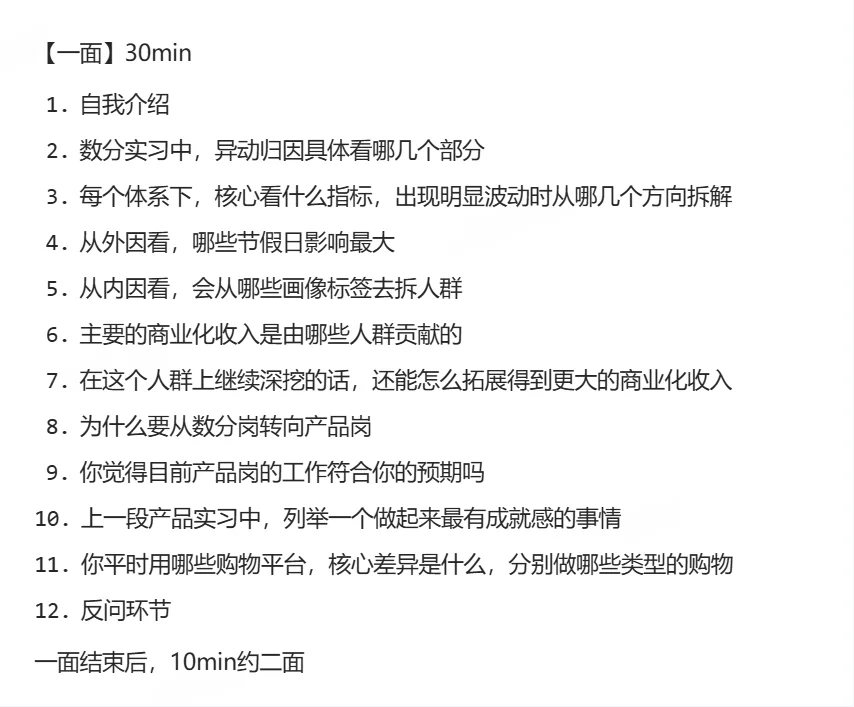
【一面】30min 1. 自我介绍 2. 数分实习中，异动归因具体看哪几个部分 3.每个体系下，核心看什么指标，出现明显波动时从哪几个方向拆解 4. 从外因看，哪些节假日影响最大 5. 从内因看，会从哪些画像标签去拆人群 6. 主要的商业化收入是由哪些人群贡献的 7. 在这个人群上继续深挖的话，还能怎么拓展得到更大的商业化收入 8. 为什么要从数分岗转向产品岗 9. 你觉得目前产品岗的工作符合你的预期吗 10.上一段产品实习中，列举一个做起来最有成就感的事情 11.你平时用哪些购物平台，核心差异是什么，分别做哪些类型的购物 12. 反问环节 一面结束后，10min约二面
OCR 由机器生成，可能存在识别错误，请以原图为准。
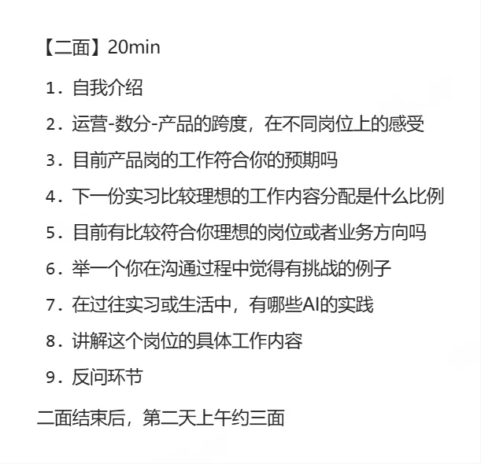
【二面】20min 1. 自我介绍 2. 运营-数分-产品的跨度，在不同岗位上的感受 3. 目前产品岗的工作符合你的预期吗 4.下一份实习比较理想的工作内容分配是什么比例 5. 目前有比较符合你理想的岗位或者业务方向吗 6. 举一个你在沟通过程中觉得有挑战的例子 7. 在过往实习或生活中，有哪些AI的实践 8. 讲解这个岗位的具体工作内容 9. 反问环节 二面结束后，第二天上午约三面
OCR 由机器生成，可能存在识别错误，请以原图为准。
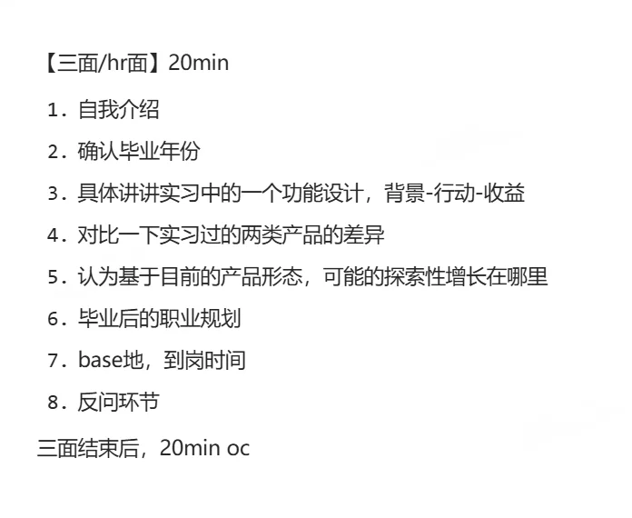
【三面/hr面】20min 1. 自我介绍 2. 确认毕业年份 3.具体讲讲实习中的一个功能设计，背景-行动-收益 4. 对比一下实习过的两类产品的差异 5. 认为基于目前的产品形态，可能的探索性增长在哪里 6. 毕业后的职业规划 7. base地，到岗时间 8. 反问环节 三面结束后，20min oc
OCR 由机器生成，可能存在识别错误，请以原图为准。
images/一面 80min 地狱级难度但是面试官干脆利落条理清晰逻辑性强面完一整个深深爱上❤️ 1️⃣自我介绍➕职业规划➕产品和战略商分的区别➕个人性格与不同工作的对应性 2️⃣🐶产品深挖：讲一个完整的需求的case 其中每一步都有追问，如基于用户调研的结论你想要怎么迭代产品/产品的转化漏斗如何/产品推荐逻辑是什么/你要怎么优化推荐逻辑… 3️⃣字节经分深挖：ROI计算逻辑/实验设计逻辑/如何基于ROI提升业务表现/下钻指标… 4️⃣业务case题：商家招商过程中有哪些漏斗/每一步可以如何提升转化（提升xx指标） （对这个比较陌生，面试官期望一个很详细的答案。一开始回答的不是很在点子上，面试官不停在引导，面试体验🆙🆙🆙 5️⃣若干细碎的小问题，如怎么做xx调研/做产品上自己最大的缺点… 6️⃣面试后要求提交一份之前写过的brd/prd，考察产品文档功底 二面三面都15min左右，主要聊聊过往经历和动机，无追问，很轻松 附tl：5.16投递➡️5.20一面➡️5.23二面➡️5.26三面 一小时后oc 最后📍新江湾，希望认识更多做产品的uu和前辈老师们🙌随缘蹲饭搭子 #字节跳动 #产品经理 #互联网大厂#面经 #产品经理面试 #令人心动的实习日记
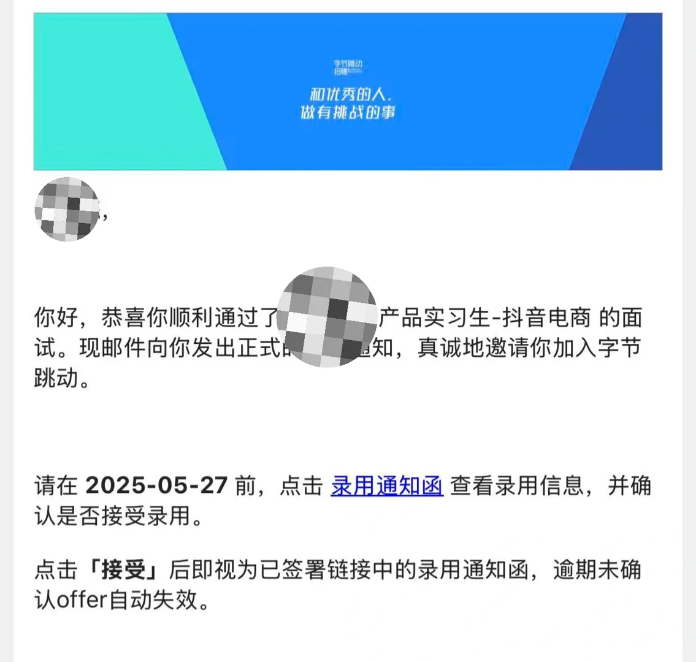
字节跳动 招聘 和优秀的人 做有挑战的事 你好，恭喜你顺利通过了 产品实习生-抖音电商的面 试。现邮件向你发出正式 知，真诚地邀请你加入字节 跳动。 请在2025-05-27前，点击录用通知函查看录用信息，并确 认是否接受录用。 点击「接受」后即视为已签署链接中的录用通知函，逾期未确 认offer自动失效。
OCR 由机器生成，可能存在识别错误，请以原图为准。
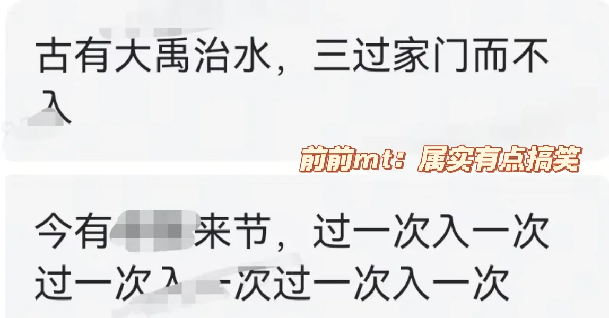
古有大禹治水，三过家门而不 入 前前mt：属实有点搞笑 今有来节，过一次入一次 过一次入一次过一次入一次
OCR 由机器生成，可能存在识别错误，请以原图为准。
images/今天分享一份极其硬核的字节（TikTok）用户增长（UG）策略产品岗面经。这个岗位面向全球市场，核心目标是解决 TikTok 全球范围内的 “新客留存” 与 “老客召回”，极其考验候选人的数据策略 Sense 和对分发算法逻辑的理解。 💡 我的面试经验总结 结合这次面试，给大家提炼三个备战大厂核心 UG 岗的关键点： 1️⃣ 警惕项目复盘的自我夸大，数据要经得起推敲 UG 岗最看重 ROI。当你依托 STAR Method 阐述策略时，面试官一定会连环追问分层逻辑与实验效果。你必须前置 Identify (识别) 痛点（如人群特征的异质性），展示 Data-driven decision making (数据驱动决策) 的推演过程，并准备好对项目失败点的深刻反思，以此体现持续 Iterate (迭代) 的闭环思维。 2️⃣ 培养 “逆向思考” 的产品 Sense 大厂非常喜欢考 “竞品反推”。比如问你：“小红书和抖音在内容分发逻辑上抓取的行为指标有什么差异？” 甚至会出极限场景题：“短视频返回上一个视频时，是从头播还是从断点播？为什么还有产品坚持从头播？” 这种题目没有标准答案，考的就是你对用户心理动机的深刻洞察。 3️⃣ 展现宏观视野，准备好高质量反问 面试 UG 这种红海领域，一定要在反问环节展现战略眼光。比如探讨 TikTok 在全球市场的 User Acquisition (用户获取) 与 Retention Rate (留存率) 在当下和未来的演变方向是什么，这能极大拉升面试官对你的好感度。 详细面试题目全记录可以见图片，希望能帮助到大家～💗 #字节跳动面经 #用户增长 #产品经理面试 #大厂面经 #求职备战 #暑期实习 #春招面经 #策略产品经理 #TikTok #暑期实习
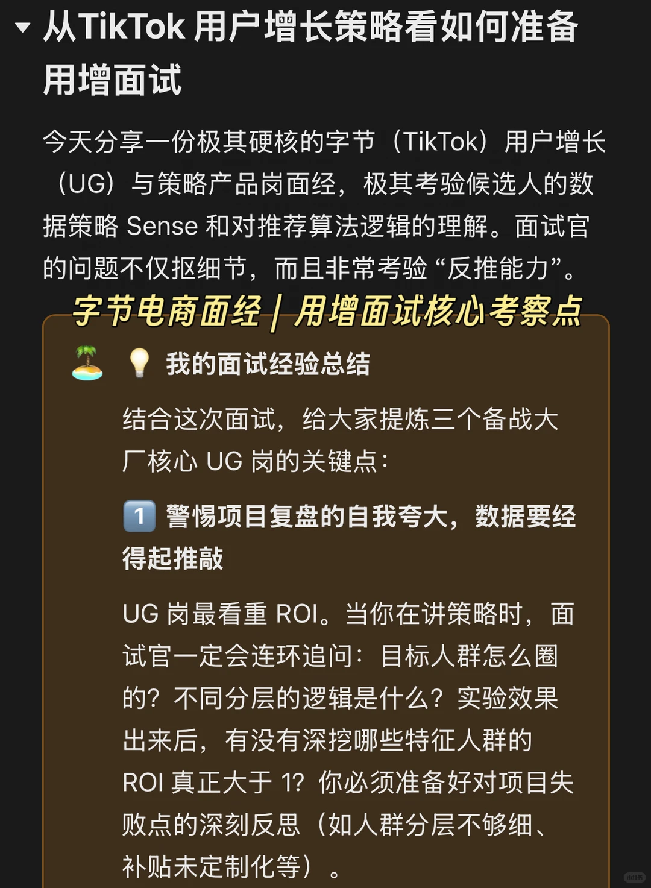
从TikTok 用户增长策略看如何准备 用增面试 今天分享一份极其硬核的字节（TikTok）用户增长 (UG）与策略产品岗面经，极其考验候选人的数 据策略 Sense 和对推荐算法逻辑的理解。面试官 的问题不仅抠细节，而且非常考验“反推能力” O 字节电商面经用增面试核心考察点 ❤ 我的面试经验总结 结合这次面试，给大家提炼三个备战大 厂核心UG岗的关键点： 1 警惕项目复盘的自我夸大，数据要经 得起推敲 UG 岗最看重 ROI。当你在讲策略时，面 试官一定会连环追问：目标人群怎么圈 的？不同分层的逻辑是什么？实验效果 出来后，有没有深挖哪些特征人群的 ROI真正大于1？你必须准备好对项目失 败点的深刻反思（如人群分层不够细、 补贴未定制化等） 0 小红书
OCR 由机器生成，可能存在识别错误，请以原图为准。
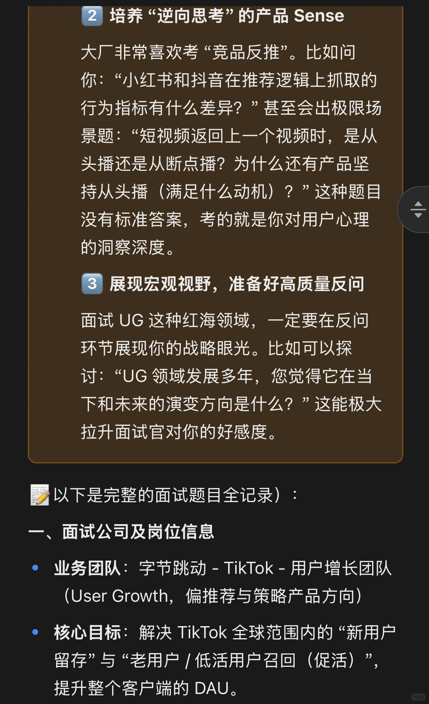
培养“逆向思考”的产品Sense 大厂非常喜欢考“竞品反推”。比如问 你：“小红书和抖音在推荐逻辑上抓取的 行为指标有什么差异？”甚至会出极限场 景题：“短视频返回上一个视频时，是从 头播还是从断点播？为什么还有产品坚 持从头播（满足什么动机）？”这种题目 没有标准答案，考的就是你对用户心理 的洞察深度。 3 展现宏观视野，准备好高质量反问 面试 UG 这种红海领域，一定要在反问 环节展现你的战略眼光。比如可以探 讨：“UG 领域发展多年，您觉得它在当 下和未来的演变方向是什么？”这能极大 拉升面试官对你的好感度。 以下是完整的面试题目全记录）： 1 面试公司及岗位信息 一、 业务团队：字节跳动-TikTok- 用户增长团队 (User Growth，偏推荐与策略产品方向) 核心目标：解决TikTok 全球范围内的“新用户 - 留存”与“老用户/低活用户召回(促活) 1 提升整个客户端的DAU。 小红书
OCR 由机器生成，可能存在识别错误，请以原图为准。
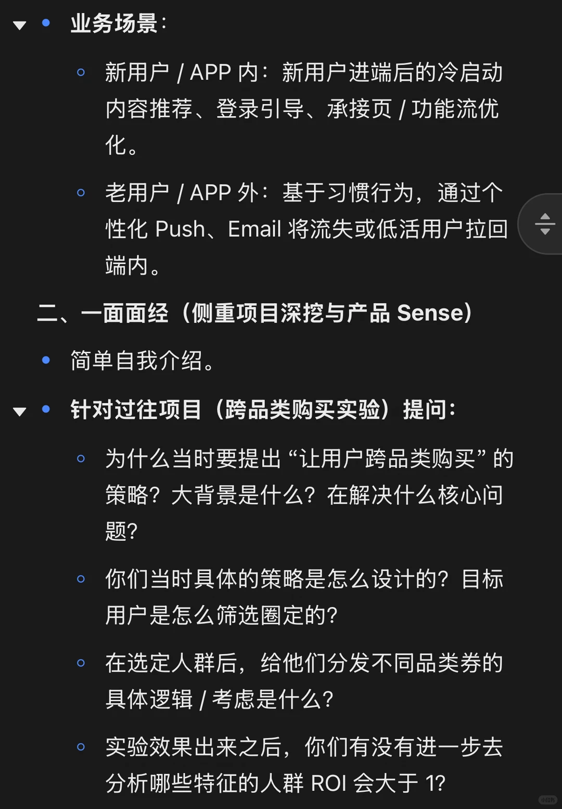
业务场景： 新用户／APP内：新用户进端后的冷启动 O 内容推荐、登录引导、承接页/功能流优 化。 老用户／APP外：基于习惯行为，通过个 O 性化 Push、Email 将流失或低活用户拉回 端内。 二、一面面经（侧重项目深挖与产品 Sense) 简单自我介绍。 针对过往项目（跨品类购买实验）提问： 为什么当时要提出“让用户跨品类购买”的 策略？大背景是什么？在解决什么核心问 题? 你们当时具体的策略是怎么设计的？目标 O 用戶是怎么筛选圈定的? 在选定人群后，给他们分发不同品类券的 O 具体逻辑/考虑是什么? 实验效果出来之后，你们有没有进一步去 分析哪些特征的人群 ROI 会大於 1? 小红书
OCR 由机器生成，可能存在识别错误，请以原图为准。
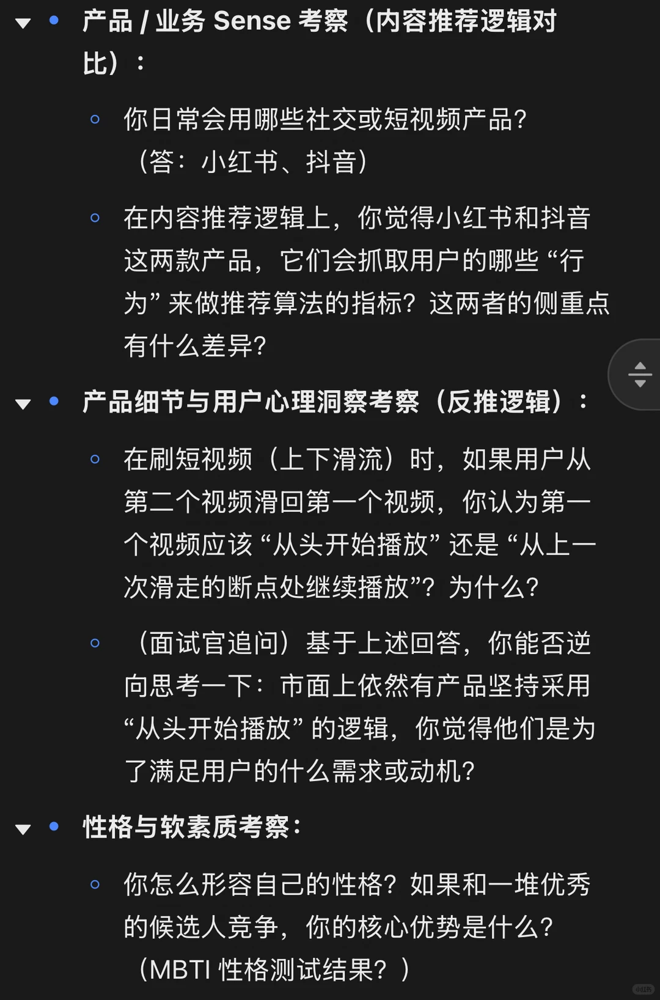
产品/业务 Sense 考察（内容推荐逻辑对 • 比）： 你日常会用哪些社交或短视频产品? (答：小红书、抖音) 在内容推荐逻辑上，你觉得小红书和抖音 这两款产品，它们会抓取用户的哪些“行 为”来做推荐算法的指标？这两者的侧重点 有什么差异? 产品细节与用户心理洞察考察（反推逻辑）： 0 在刷短视频（上下滑流）时，如果用户从 0 第二个视频滑回第一个视频，你认为第一 个视频应该“从头开始播放”还是“从上一 次滑走的断点处继续播放”？为什么? (面试官追问）基于上述回答，你能否逆 向思考一下：市面上依然有产品坚持采用 “从头开始播放”的逻辑，你觉得他们是为 了满足用户的什么需求或动机? 性格与软素质考察： 你怎么形容自己的性格？如果和一堆优秀 O 的候选人竞争，你的核心优势是什么? (MBTI性格测试结果？) 小红书
OCR 由机器生成，可能存在识别错误，请以原图为准。
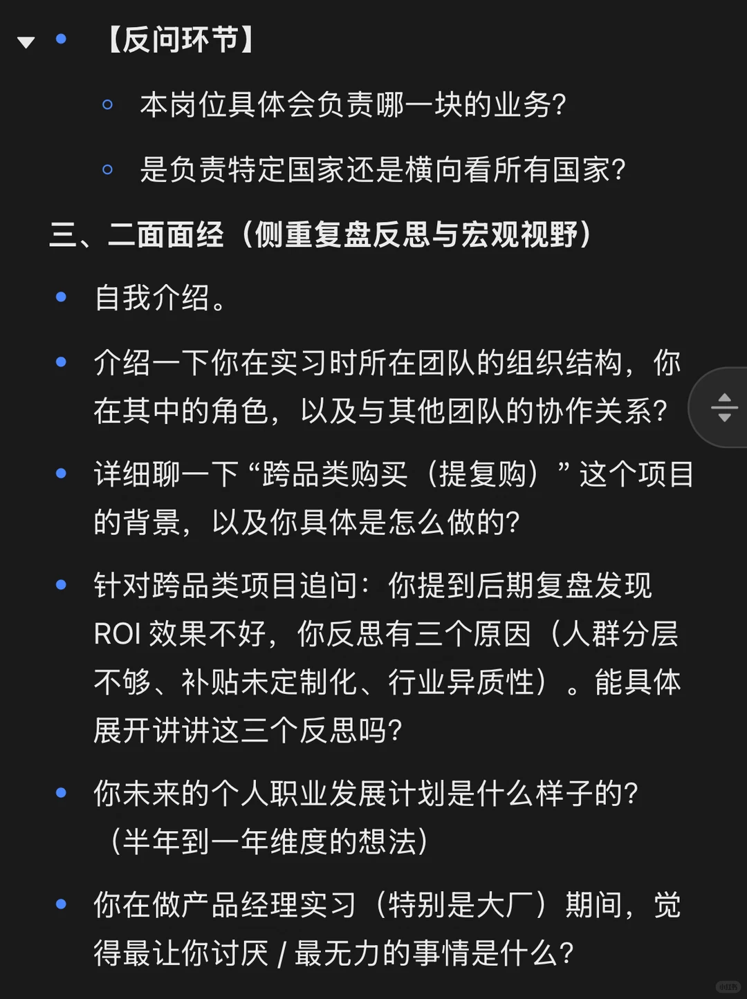
【反问环节】 本岗位具体会负责哪一块的业务? 是负责特定国家还是横向看所有国家? O 三、二面面经 (侧重复盘反思与宏观视野) 自我介绍。 • 介绍一下你在实习时所在团队的组织结构，你 在其中的角色，以及与其他团队的协作关系? 详细聊一下“跨品类购买（提复购）”这个项目 的背景，以及你具体是怎么做的? 针对跨品类项目追问：你提到后期复盘发现 ROI效果不好，你反思有三个原因（人群分层 不够、补贴未定制化、行业异质性）。能具体 展开讲讲这三个反思吗? 你未来的个人职业发展计划是什么样子的? （半年到一年维度的想法） 你在做产品经理实习（特别是大厂）期间，觉 得最让你讨厌∕最无力的事情是什么？ 小江书
OCR 由机器生成，可能存在识别错误，请以原图为准。
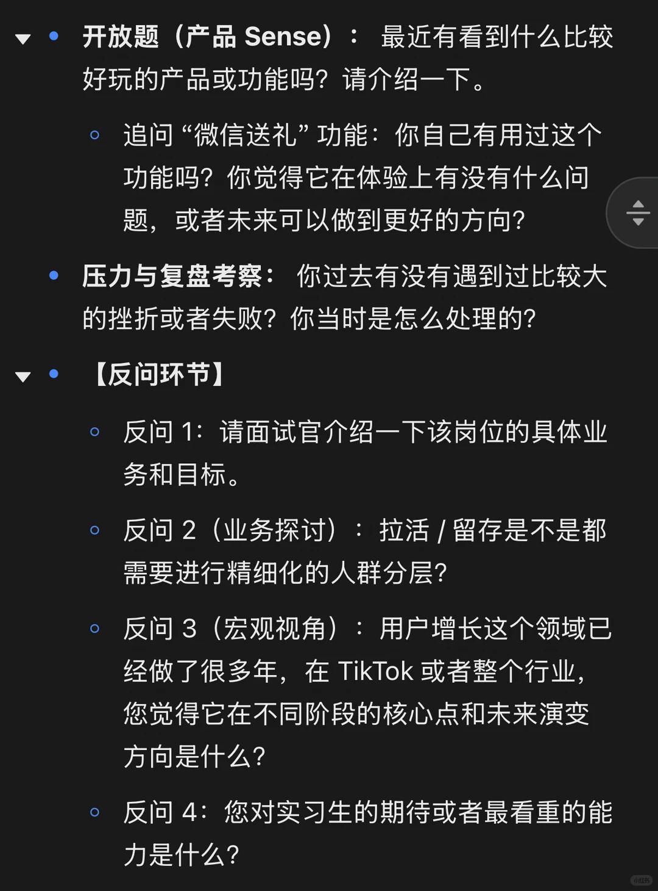
开放题（产品Sense）：最近有看到什么比较 好玩的产品或功能吗？请介绍一下。 追问“微信送礼”功能：你自己有用过这个 O 功能吗？你觉得它在体验上有没有什么问 题，或者未来可以做到更好的方向? 压力与复盘考察：你过去有没有遇到过比较大 的挫折或者失败？你当时是怎么处理的? 【反问环节】 反问1：请面试官介绍一下该岗位的具体业 务和目标。 反问2（业务探讨）：拉活∕留存是不是都 O 需要进行精细化的人群分层? 反问3（宏观视角）：用户增长这个领域已 O 经做了很多年，在 TikTok 或者整个行业， 您觉得它在不同阶段的核心点和未来演变 方向是什么？ 反问4：您对实习生的期待或者最看重的能 0 力是什么? 小红书
OCR 由机器生成，可能存在识别错误，请以原图为准。
images/抖音增长策略产品实习一面凉经热乎的，刚结束就出来复盘了。。。感觉自己废话连篇，，，没有怎么准备就面是这样的 把重要的点写在前面: 1.对实习生数据敏感度要求很高 2.对增长策略一定要了解 3.简历会深挖到你的全部insights 面试提问: 1.自我介绍 2.深挖第一段实习，why，how，results 3.了解过付费增长吗（os没听过不了解面试官于是跳过，大概意思是我来面试增长策略怎么连这个都不知道开头就凉凉） 4.有关AI使用的提问，如何用AI解决了你在实习中遇到的问题，分享一个case，包括你的prompt，优化的内容，改大框架还是改了小细节，怎么改 5.介绍你独立完成的一个项目，你从中得到了哪些insights？完成的过程有哪些问题又如何去解决这些问题？ 6.假设你负责一个新的app，你打算如何推动用户增长？ 7.why产品？之前有没有面过产品，你如何提高自己的数据sense？ 8.反问:抖音用户流失怎么分析？增长产品实习生需要的能力？ 感觉会对你的简历不断鞭打，但前后估计也就准备了两个小时，下次留足时间好好准备吧…… #互联网大厂实习 #互联网大厂 #产品经理面试 #找实习 #增长策略 #增长产品实习 #搜索产品实习 #面经 #字节跳动 #抖音实习
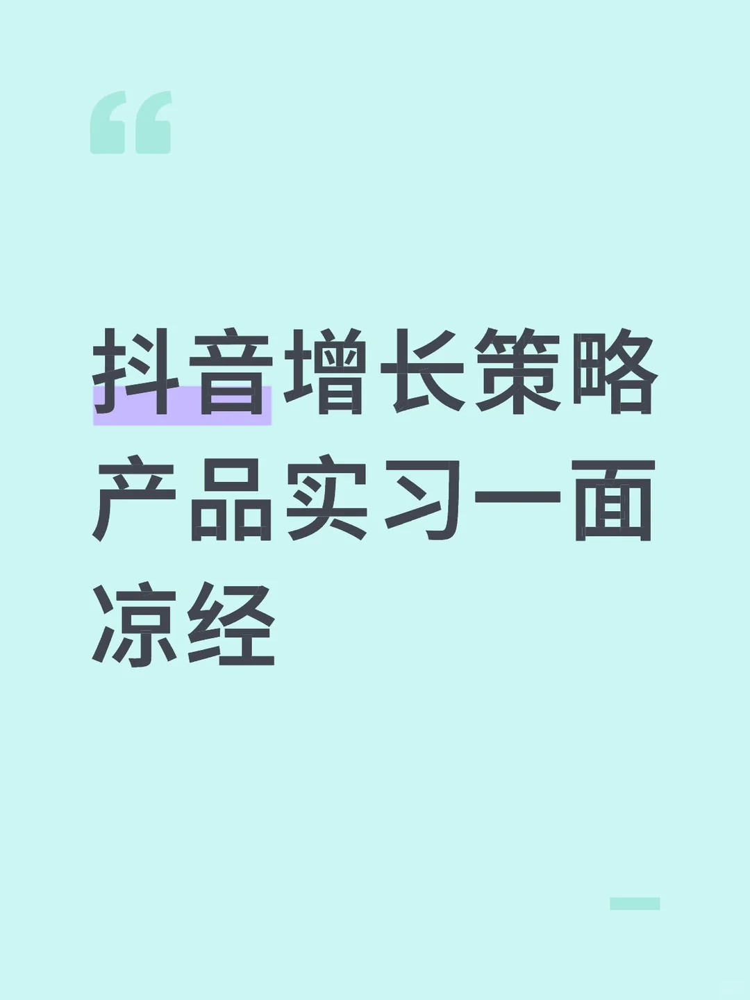
66 抖音增长策略 产品实习一面 凉经
OCR 由机器生成，可能存在识别错误，请以原图为准。
images/今天想和大家分享一场【抖音用户增长】产品经理实习面经！ 这轮几乎不问八股，核心在考：产品sense + 数据思考 + 方向判断。我的最大感受：会做AI项目≠会做产品，差距全在“细节”和“闭环”。 1）自我介绍&项目深挖：别讲功能清单，要讲定位与取舍 我开场说了3个AI项目、500+内测用户、比赛经历。面试官让我挑一个深挖，我讲了“基于用户授权数据做群聊日报/待办提取/分身陪聊”等功能。对方追问很狠：这些到底是不是同一类场景？为什么要放在一个产品里？——我当场意识到：我讲“做了啥”太多，讲“为谁做、为什么这么做、砍掉了什么”太少。 2）开放题：先答“题目”，再答“方案” 题目是：10-20分钟信息密度高的视频，AI能做什么？ 我第一反应居然纠结“这种长内容多不多”，被提醒：先接受题设，重点是提升消费体验。 如果重来，我会用5步法（30秒先搭框架）： ①用户：学习/深度内容用户 ②目标：更快吸收 + 更好复习 + 更愿意继续看 ③约束：准确、可追溯、少打扰 ④分层功能： - 看前：3句话预告 + 难度/时长提示 - 看中：时间轴要点卡片（点一下跳到对应片段） - 看后：结构化笔记（结论-论据-案例）+ 追问问答 + 相关推荐路径 ⑤闭环：点击/收藏/提问 → 反哺推荐与内容供给 我当时只答了“梗概/笔记/问答/推荐”，方向没错，但不够“分层+约束+闭环”，听起来就更像脑暴。 3）一个小插曲：抖音 vs 小红书的“细微差别”怎么聊才加分 面试官让我举“小红书里你觉得做得好的具体功能细节”。我只说了大的差异：小红书更偏图文笔记与社区聚焦，抖音更偏强刺激视频；但当对方追问到“比如图文全屏沉浸式这种改动，用户体验到底变好了哪里”，我卡住了…… 复盘：竞品分析别停在“平台气质”，一定要准备2-3个“可落到交互细节”的例子（入口、路径、反馈、对指标的影响）。 4）面试官给我的3个关键词（很实用） - 细节：你是不是产品的第一个用户？能不能讲出具体体验点 - 数据：数字背后有没有insight，能不能推到下一步迭代 - 方向：到底在为谁解决什么问题，为什么这样做 5）我接下来怎么练（实习圈有大牛分享经验） 讲项目=一句话定位 + 1个核心指标 + 1个关键取舍；每天拆1个产品细节；开放题永远先“用户-目标-约束”，再谈功能。 #字节面试 #字节产品经理 #字节实习
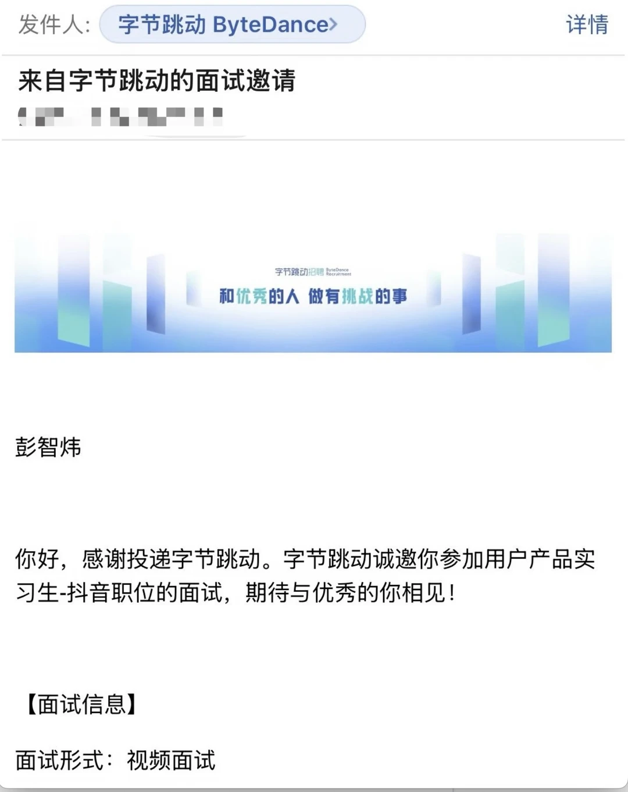
发件人： 字节跳动 ByteDance> 详情 来自字节跳动的面试邀请 字节跳动招聘 和优秀的人做有挑战的事 彭智炜 你好，感谢投递字节跳动。字节跳动诚邀你参加户产品实 习-抖职位的试，期待与优秀的你相见！ 【面试信息】 面试形式：视频面试
OCR 由机器生成，可能存在识别错误，请以原图为准。
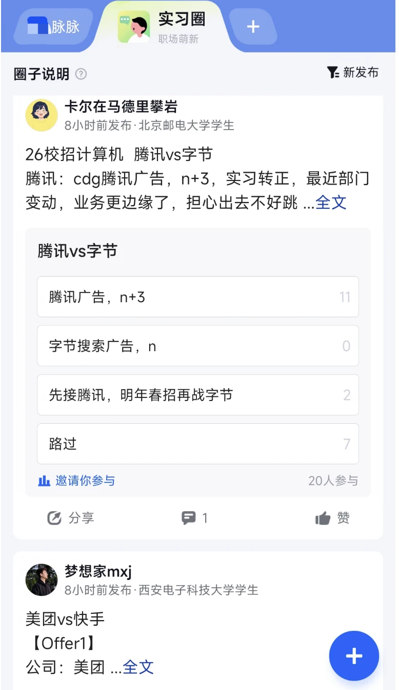
实习圈 脉脉 职场萌新 圈子说明 ▼ 新发布 ? 卡尔在马德里攀岩 8小时前发布·北京邮电大学学生 26校招计算机腾讯vs字节 腾讯：cdg腾讯广告，n+3，实习转正，最近部门 变动，业务更边缘了，担心出去不好跳…全文 腾讯vs字节 腾讯广告，n+3 11 字节搜索广告，n 先接腾讯，明年春招再战字节 2 路过 7 山邀请你参与 20人参与 分享 日1 赞 梦想家mxj 8时前发布·西安电子科技大学学生 美团vs快手 【Offer1】 公司：美团.全文 ×
OCR 由机器生成，可能存在识别错误，请以原图为准。
images/想复盘一下面经，记得面了1h，是很典型很完整的一次拷问，可供大家参考，放不下的问题见图片～ 主要部分：自我介绍➡️个人经历➡️开放性经历➡️职业规划 业务与能力➡️反问 自我经历 🔆自我介绍-说完第一个实习（打断） ✨回答：展现实习链路和个人能力 ✨分析：说明风格是比较灵活弹性的 个人经历 🔆个人经历-怎么牵引用户跨品类购买，怎么度量补贴动作效益和成本，ROI怎么计算 ✨分析：很典型的用增连环问，就是想听你的经历（激励动作、动作分析思路） ✨回答：铺垫背景、动作、具体数据分析，还重点讲下数据的好坏认为可以迭代的思路（体现思考） 🔆个人经历-XX 厂广告有没有完整度好成长性高的经历 ✨分析：非主要领域主要看思维，是否能把项目叙述清楚且有顶层思路 ✨回答：讲框架讲思路，讲清楚为什么要做（背景+大指标）核心动作（哪几个方面、什么效果），没有追问 🔆问🦐弹窗如何选择人群，如何触达，希望知道具体动作、解决什么问题、达成什么效果 ✨分析：触达也是用增一手段，希望了解细节 ✨回答：聊项目背景，为什么这人群（从哪里引，定义），如何引，如何承接，效果分析，对自身频道影响对其他频道影响（频控等） 🔆追问：人群角度还有什么可以迭代的吗？比如之后触达更多怎么样的人群？ 后续问题的思路可看图片👀 🔆问商业化智能优惠券逻辑如何成立 🔆问具体ROI定义和发券下发依据，ROI预估偏差 🔆聊具体项目商业化券和电商券挤压 🔆说一个相关经历，完整参与到所谓券门槛面额、人货制定，如何发、发给谁、怎么设计参数，思维框架 🔆追问：发券效率、券类型，考虑到场域之间用户流动 业务与能力 🔆问数据分析SQL能力 🔆追问：认为产品需要跑数吗，认为自己跑效率会更高吗，这是所谓阶段性资源不够补位 🔆问职业规划，方向路径 🔆追问：认为用增也会有依赖算法，有黑盒，怎么看待算法和产品的关系，认为产品可以创造业务价值在哪里 反问 🔆详细问业务+候选人品质 🔆用增的演变史：用增瓶颈，券依赖，多补等问题 🔆自己业务希望听到他的想法和探讨：商业化和电商发券 想听什么具体问题和思路的也可以评论～👀 #产品经理面试 #面试技巧 #互联网大厂 #用户增长面试 #字节 #ssp #产品面经 #字节面试 #互联网大厂实习 #产品经理
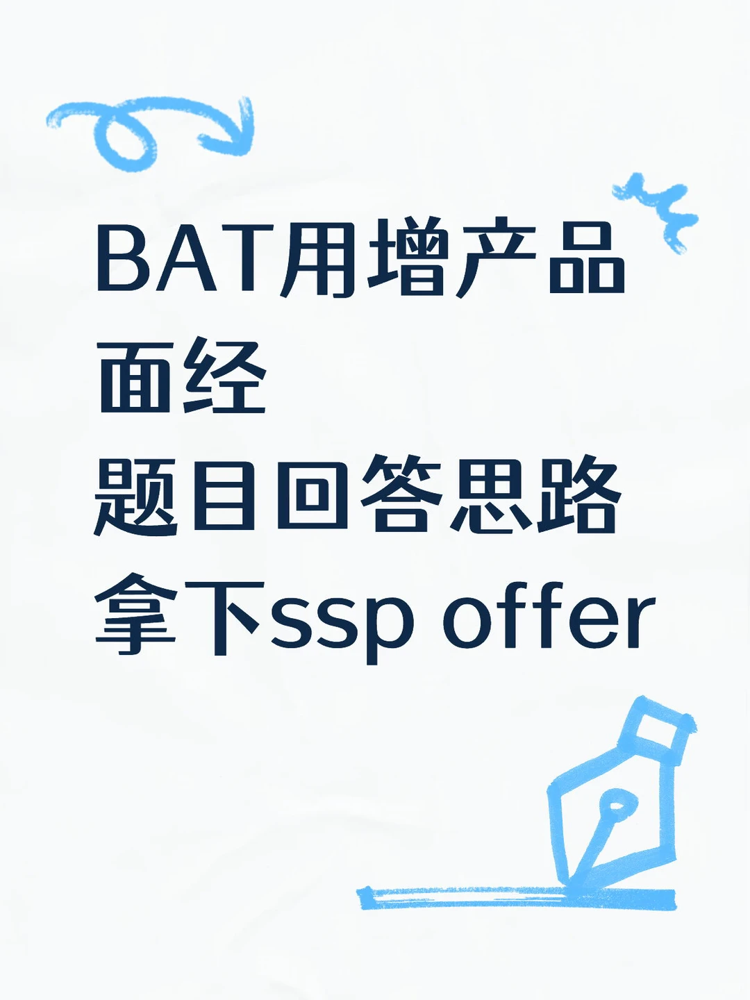
BAT用增产品 面经 题目回答思路 拿下ssp offer
OCR 由机器生成，可能存在识别错误，请以原图为准。
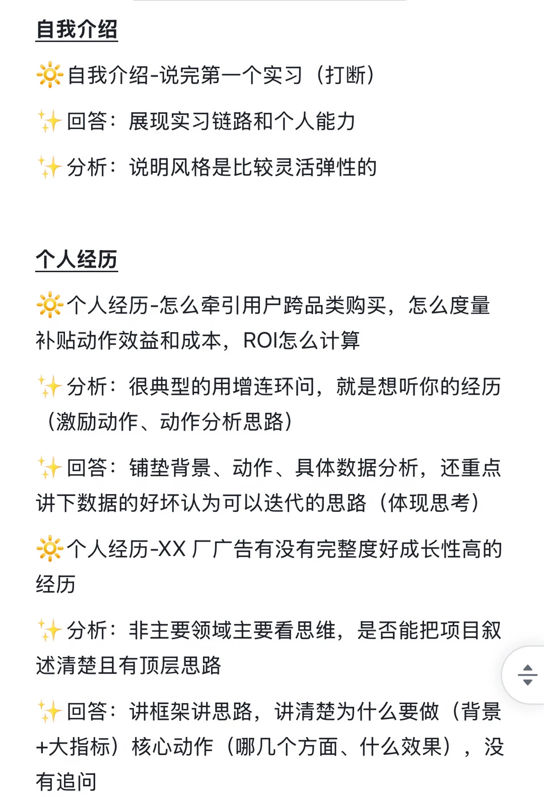
自我介绍 自我介绍-说完第个实习(打断) 升 回答：展现实习链路和个人能力 ✨ 分析：说明风格是比较灵活弹性的 个人经历 🔆个人经历-怎么牵引用户跨品类购买，怎么度量 补贴动作效益和成本，ROI怎么计算 分析：很典型的用增连环问，就是想听你的经历 （激励动作、动作分析思路） ✨ 回答：铺垫背景、动作、具体数据分析，还重点 讲下数据的好坏认为可以迭代的思路（体现思考） 🔆个人经历-XX厂广告有没有完整度好成长性高的 经历 ✨ 分析：非主要领域主要看思维，是否能把项目叙 述清楚且有顶层思路 ✨ 回答：讲框架讲思路，讲清楚为什么要做（背景 +大指标）核心动作（哪几个方面、什么效果），没 有追问
OCR 由机器生成，可能存在识别错误，请以原图为准。
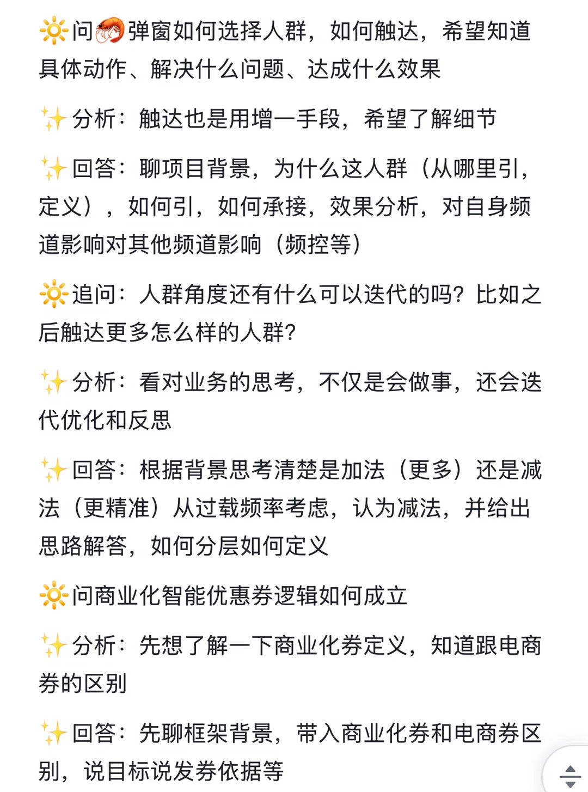
🔆问 弹窗如何选择人群，如何触达，希望知道 具体动作、解决什么问题、达成什么效果 分析：触达也是用增一手段，希望了解细节 ✨回答：聊项目背景，为什么这人群（从哪里引， 定义），如何引，如何承接，效果分析，对自身频 道影响对其他频道影响（频控等） -追问：人群角度还有什么可以迭代的吗？比如之 后触达更多怎么样的人群? ✨分析：看对业务的思考，不仅是会做事，还会迭 代优化和反思 回答：根据背景思考清楚是加法（更多）还是减 法（更精准）从过载频率考虑，认为减法，并给出 思路解答，如何分层如何定义 🔆问商业化智能优惠券逻辑如何成立 分析：先想了解一下商业化券定义，知道跟电商 券的区别 升 回答：先聊框架背景，带入商业化券和电商券区 别，说目标说发券依据等 二
OCR 由机器生成，可能存在识别错误，请以原图为准。
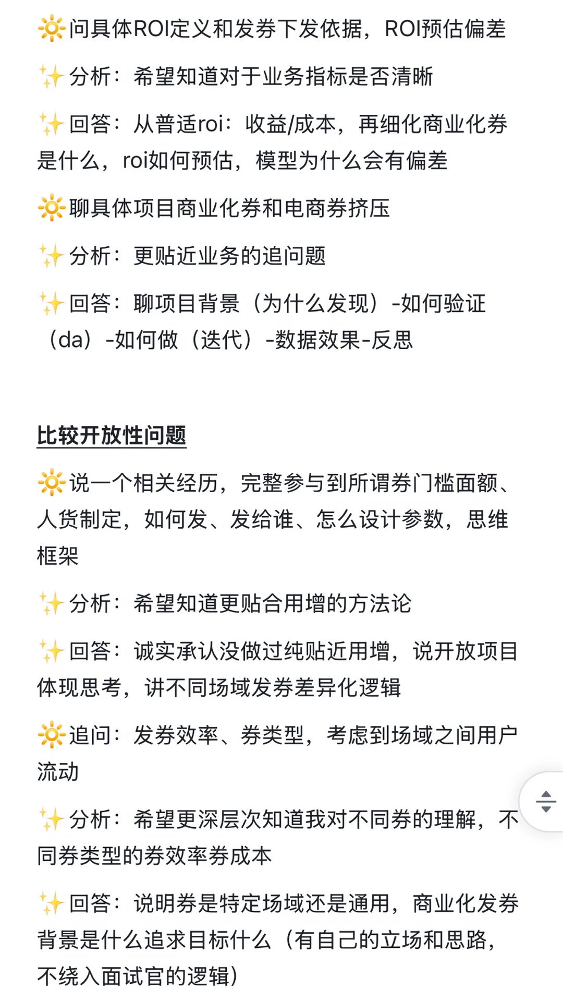
🔆问具体ROI定义和发券下发依据，ROI预估偏差 +分析：希望知道对于业务指标是否清晰 回答：从普适roi：收益/成本，再细化商业化券 是什么，roi如何预估，模型为什么会有偏差 聊具体项目商业化券和电商券挤压 ✨ 分析：更贴近业务的追问题 回答：聊项目背景（为什么发现）-如何验证 (da)-如何做（迭代）-数据效果-反思 比较开放性问题 🔆说一个相关经历，完整参与到所谓券门槛面额、 人货制定，如何发、发给谁、怎么设计参数，思维 框架 分析：希望知道更贴合用增的方法论 回答：诚实承认没做过纯贴近用增，说开放项目 体现思考，讲不同场域发券差异化逻辑 -追问：发券效率、券类型，考虑到场域之间用户 流动 - 分析：希望更深层次知道我对不同券的理解，不 同券类型的券效率券成本 ✨「 回答：说明券是特定场域还是通用，商业化发券 背景是什么追求目标什么（有自己的立场和思路， 不绕入面试官的逻辑)
OCR 由机器生成，可能存在识别错误，请以原图为准。
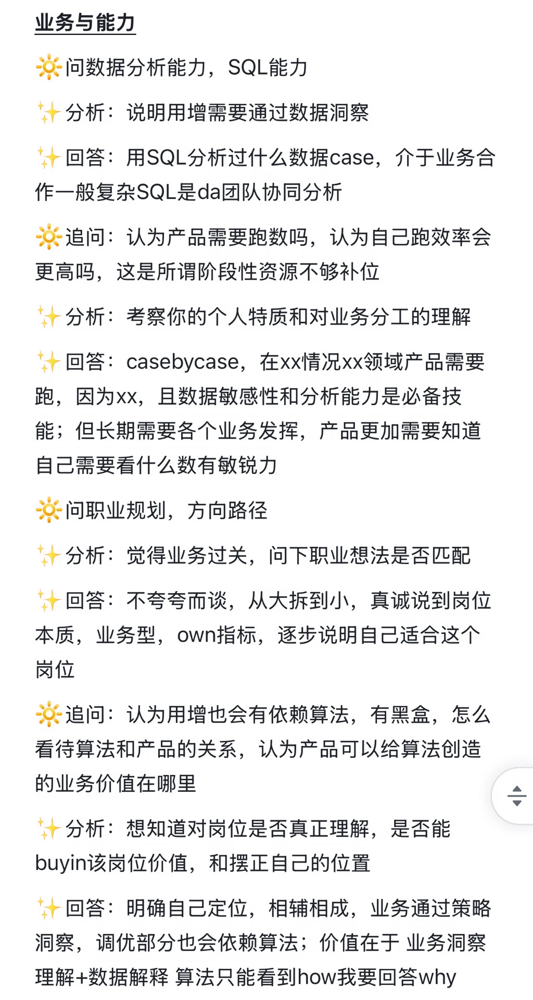
业务与能力 问数据分析能力，SQL能力 分析：说明用增需要通过数据洞察 回答：用SQL分析过什么数据case，介于业务合 作一般复杂SQL是da团队协同分析 🔆追问：认为产品需要跑数吗，认为自己跑效率会 更高吗，这是所谓阶段性资源不够补位 分析：考察你的个人特质和对业务分工的理解 回答：casebycase，在xx情况xx领域产品需要 跑，因为XX，且数据敏感性和分析能力是必备技 能；但长期需要各个业务发挥，产品更加需要知道 自己需要看什么数有敏锐力 🔆问职业规划，方向路径 分析：觉得业务过关，问下职业想法是否匹配 回答：不夸夸而谈，从大拆到小，真诚说到岗位 本质，业务型，own指标，逐步说明自己适合这个 岗位 🔆追问：认为用增也会有依赖算法，有黑盒，怎么 看待算法和产品的关系，认为产品可以给算法创造 的业务价值在哪里 ÷ 分析：想知道对岗位是否真正理解，是否能 buyin该岗位价值，和摆正自己的位置 回答：明确自己定位，相辅相成，业务通过策略 洞察，调优部分也会依赖算法；价值在于业务洞察 理解+数据解释算法只能看到how我要回答why
OCR 由机器生成，可能存在识别错误，请以原图为准。
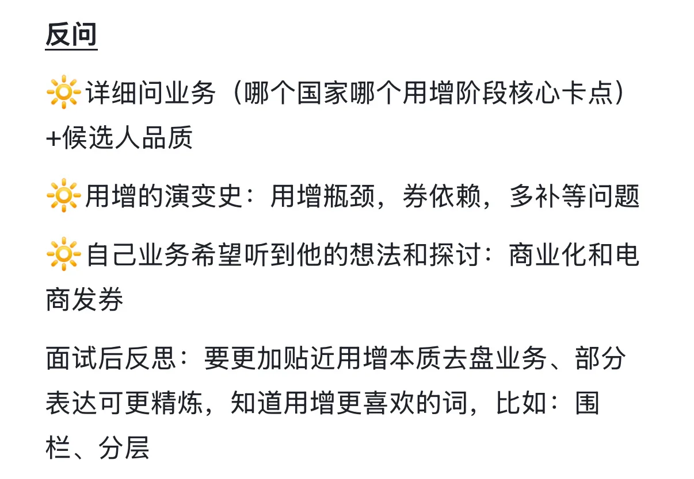
反问 🔆详细问业务（哪个国家哪个用增阶段核心卡点) +候选人品质 🔆 用增的演变史：用增瓶颈，券依赖，多补等问题 🔆自己业务希望听到他的想法和探讨：商业化和电 商发券 面试后反思：要更加贴近用增本质去盘业务、部分 表达可更精炼，知道用增更喜欢的词，比如：围 栏、分层
OCR 由机器生成，可能存在识别错误，请以原图为准。
images/接上篇笔记提到的校招面试了21次字节之后来大放送一下面经： 这是主包在26届秋招过程中的提问 实习面试应该不会这么难 不用纠结每个问题因为大概率不会问到原题 抽象归纳一下结论： 节子一如既往的面试风格：问过往经历问的非常非常细节。 从大到小包括业务背景 → 具体执行步骤 → 传导关系 → 关注啥指标/口径是什么咋算的； 以及你过去实习中有哪些能力可以迁移到面试的这个业务或岗位，你会怎么迁移复用； 实习经历比较多的也可能会被问到多段实习之间的对比/为什么会选择这些业务方向实习 开放性问题挺难 节子的开放性问题有紧贴面试岗位考察你对业务理解深度的，也有结合日常产品使用考察产品迭代sense的； 前者会被给一些具体场景，比如上了新的功能你会怎么利用不同渠道设计用增方法； 后者就是结合你的回答（比如让你举例几个常用的产品问你对这些产品功能优缺点的感知）进一步深挖提问了（比如问你对缺点怎么迭代）。 tips：先把问题的拆解框架摆清楚再填内容，不要一地鸡毛想到啥说啥是最重要的，其实就是考察结构化思考能力。语速可以慢一点边想边说。 问到对AI的理解是不可避免了 包括两种提问： 一种是AI+业务，会问你面试岗位的这个产品有哪些地方可以结合ai功能提效；加了ai之后怎么做用增手段，海内外的各种ai功能做用增的方式对比。 另一种就是纯问ai，比如你对agent的理解，对市场上相关的ai生图/生视频的产品有什么认知。 总结如上，祝uu们面节子顺利！ #互联网大厂 #SOP框架课代表 #互联网大厂实习 #产品经理面试 #面经 #字节 #用户增长 #面试题
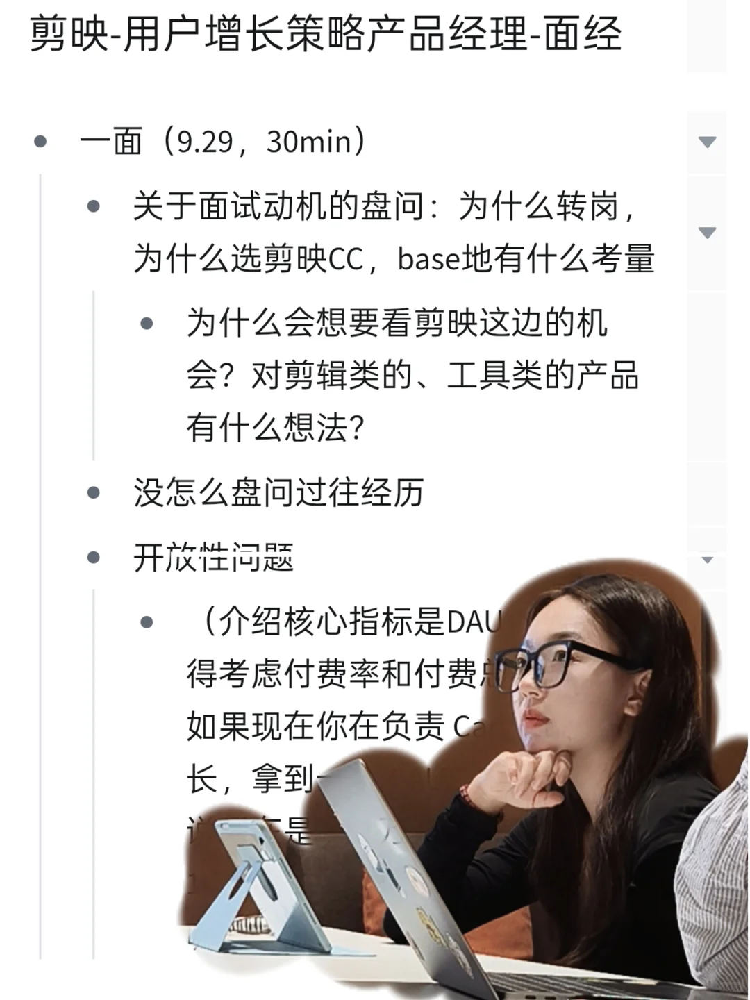
剪映-用户增长策略产品经理-面经 一面(9.29，30min) 关于面试动机的盘问：为什么转岗， 为什么选剪映CC，base地有什么考量 为什么会想要看剪映这边的机 会？对剪辑类的、工具类的产品 有什么想法? 没怎么盘问过往经历 开放性问题 （介绍核心指标是DAU 得考虑付费率和付费入 如果现在你在负责C 长，拿到 是
OCR 由机器生成，可能存在识别错误，请以原图为准。
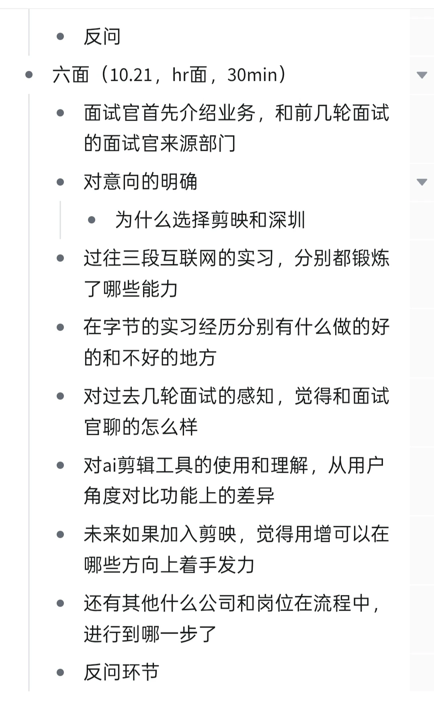
反问 六面(10.21，hr面，30min) 面试官首先介绍业务，和前几轮面试 的面试官来源部门 对意向的明确 为什么选择剪映和深圳 过往三段互联网的实习，分别都锻炼 了哪些能力 在字节的实习经历分别有什么做的好 的和不好的地方 对过去几轮面试的感知，觉得和面试 官聊的怎么样 对ai剪辑工具的使用和理解，从用户 角度对比功能上的差异 未来如果加入剪映，觉得用增可以在 哪些方向上着手发力 还有其他什么公司和岗位在流程中， 进行到哪一步了 反问环节
OCR 由机器生成，可能存在识别错误，请以原图为准。
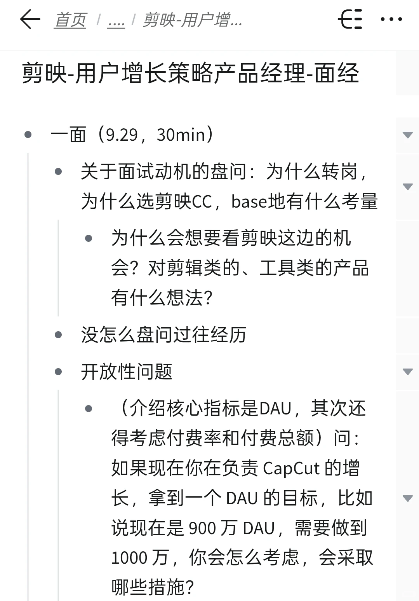
首页||剪映-用户增 £…… 剪映-用户增长策略产品经理-面经 一面(9.29，30min) 关于面试动机的盘问：为什么转岗， 为什么选剪映CC，base地有什么考量 为什么会想要看剪映这边的机 会？对剪辑类的、工具类的产品 有什么想法? 没怎么盘问过往经历 开放性问题 （介绍核心指标是DAU，其次还 得考虑付费率和付费总额）问： 如果现在你在负责 CapCut 的增 长，拿到一个DAU 的目标，比如 说现在是900万DAU，需要做到 1000万，你会怎么考虑，会采取 哪些措施?
OCR 由机器生成，可能存在识别错误，请以原图为准。
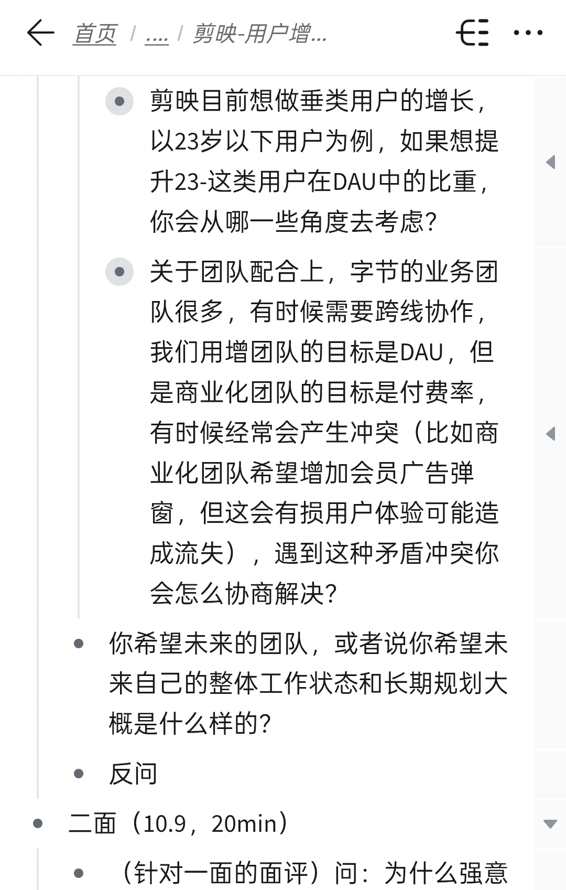
首页||剪映-用户增 £…… 剪映目前想做垂类用户的增长， 以23岁以下用户为例，如果想提 升23-这类用户在DAU中的比重， 你会从哪一些角度去考虑? 关于团队配合上，字节的业务团 队很多，有时候需要跨线协作， 我们用增团队的目标是DAU，但 是商业化团队的目标是付费率， 有时候经常会产生冲突（比如商 业化团队希望增加会员广告弹 窗，但这会有损用户体验可能造 成流失），遇到这种矛盾冲突你 会怎么协商解决? 你希望未来的团队，或者说你希望未 来自己的整体工作状态和长期规划大 概是什么样的？ 反问 二面(10.9，20min) （针对一面的面评）问：为什么强意
OCR 由机器生成，可能存在识别错误，请以原图为准。
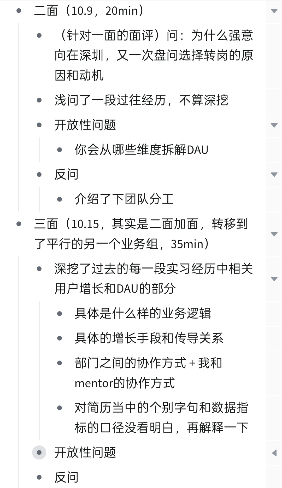
二面(10.9，20min) （针对一面的面评）问：为什么强意 向在深圳，又一次盘问选择转岗的原 因和动机 浅问了一段过往经历，不算深挖 开放性问题 你会从哪些维度拆解DAU 反问 介绍了下团队分工 三面（10.15，其实是二面加面，转移到 了平行的另一个业务组，35min) 深挖了过去的每一段实习经历中相关 用户增长和DAU的部分 具体是什么样的业务逻辑 具体的增长手段和传导关系 部门之间的协作方式 + 我和 mentor的协作方式 对简历当中的个别字句和数据指 标的口径没看明白，再解释一下 开放性问题 反问
OCR 由机器生成，可能存在识别错误，请以原图为准。
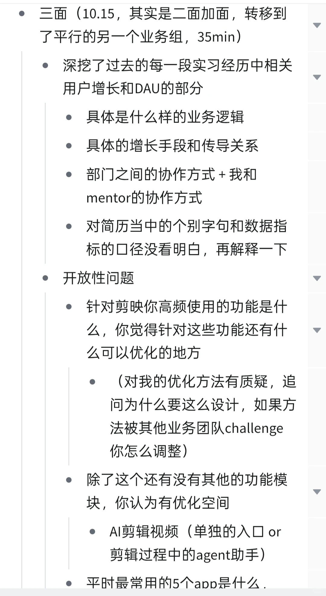
三面（10.15，其实是二面加面，转移到 了平行的另一个业务组，35min) 深挖了过去的每一段实习经历中相关 用户增长和DAU的部分 具体是什么样的业务逻辑 具体的增长手段和传导关系 部门之间的协作方式 +我和 mentor的协作方式 对简历当中的个别字句和数据指 标的口径没看明白，再解释一下 开放性问题 针对剪映你高频使用的功能是什 么，你觉得针对这些功能还有什 么可以优化的地方 (对我的优化方法有质疑，追 问为什么要这么设计，如果方 法被其他业务团队challenge 你怎么调整) 除了这个还有没有其他的功能模 块，你认为有优化空间 AI剪辑视频（单独的入□or 剪辑过程中的agent助手) 平时最常用的5个app是什么
OCR 由机器生成，可能存在识别错误，请以原图为准。
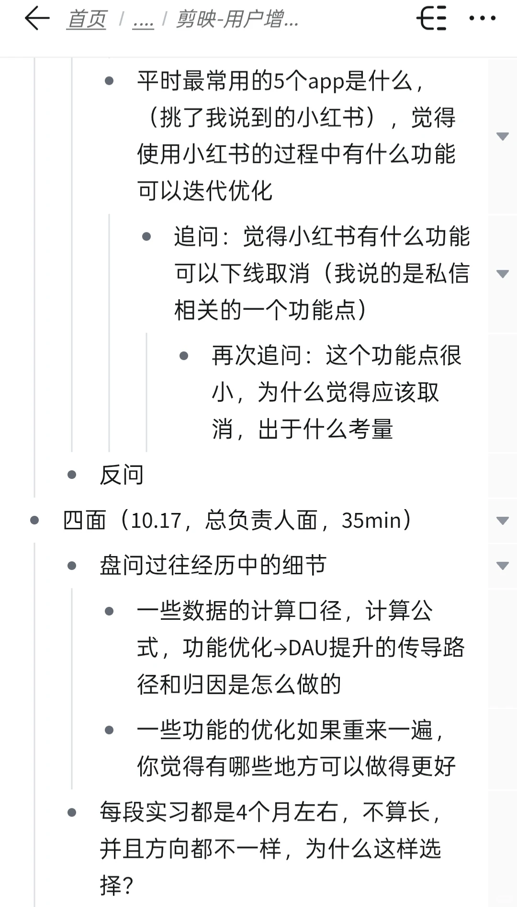
…： 首页|./剪映-用户增. 平时最常用的5个app是什么， （挑了我说到的小红书），觉得 使用小红书的过程中有什么功能 可以迭代优化 追问：觉得小红书有什么功能 可以下线取消（我说的是私信 相关的一个功能点) 再次追问：这个功能点很 小，为什么觉得应该取 消，出于什么考量 反问 四面(10.17，总负责人面，35min) 盘问过往经历中的细节 一些数据的计算□径，计算公 式，功能优化→DAU提升的传导路 径和归因是怎么做的 一些功能的优化如果重来一遍， 你觉得有哪些地方可以做得更好 每段实习都是4个月左右，不算长， 并且方向都不一样，为什么这样选 择？
OCR 由机器生成，可能存在识别错误，请以原图为准。
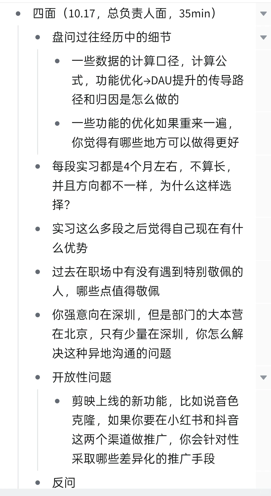
四面(10.17，总负责人面，35min) 盘问过往经历中的细节 一些数据的计算□径，计算公 式，功能优化→DAU提升的传导路 径和归因是怎么做的 一些功能的优化如果重来一遍， 你觉得有哪些地方可以做得更好 每段实习都是4个月左右，不算长， 并且方向都不一样，为什么这样选 择？ 实习这么多段之后觉得自己现在有什 么优势 过去在职场中有没有遇到特別敬佩的 人，哪些点值得敬佩 你强意向在深圳，但是部门的大本营 在北京，只有少量在深圳，你怎么解 决这种异地沟通的问题 开放性问题 剪映上线的新功能，比如说音色 克隆，如果你要在小红书和抖音 这两个渠道做推广，你会针对性 采取哪些差異化的推广手段 反问
OCR 由机器生成，可能存在识别错误，请以原图为准。
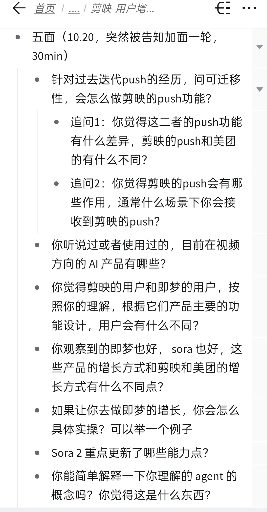
首页.|剪映-用户增. £…: - 五面（10.20，突然被告知加面一轮， 30min) 针对过去迭代push的经历，问可迁移 性，会怎么做剪映的push功能？ 追问1：你觉得这二者的push功能 有什么差异，剪映的push和美团 的有什么不同? 追问2：你觉得剪映的push会有哪 些作用，通常什么场景下你会接 收到剪映的push? 你听说过或者使用过的，目前在视频 方向的AI产品有哪些? 你觉得剪映的用户和即梦的用户，按 照你的理解，根据它们产品主要的功 能设计，用户会有什么不同？ 你观察到的即梦也好，sora也好，这 些产品的增长方式和剪映和美团的增 长方式有什么不同点? 如果让你去做即梦的增长，你会怎么 具体实操？可以举一个例子 Sora 2重点更新了哪些能力点? 你能简单解释一下你理解的 agent的 概念吗？你觉得这是什么东西?
OCR 由机器生成，可能存在识别错误，请以原图为准。
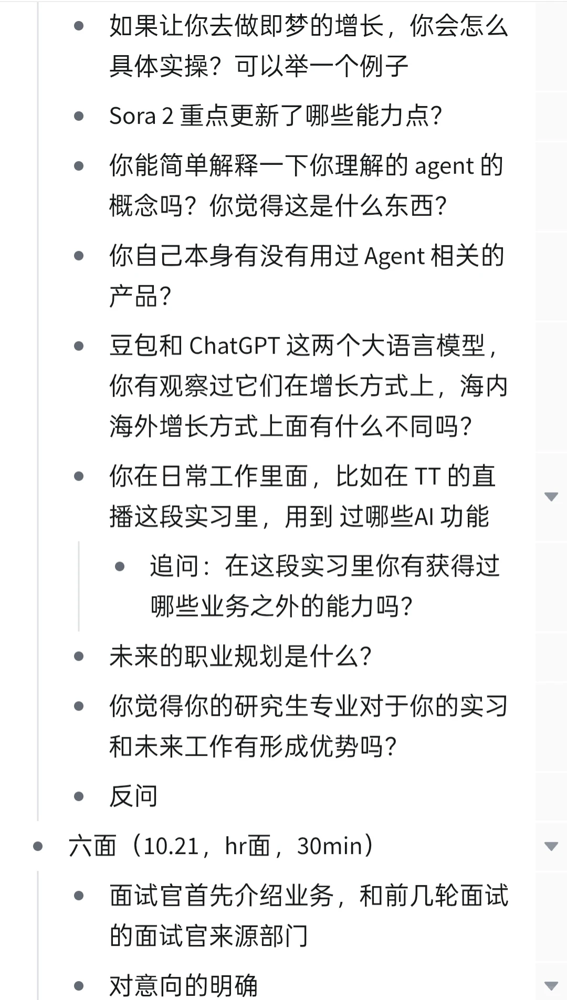
如果让你去做即梦的增长，你会怎么 具体实操？可以举一个例子 Sora 2重点更新了哪些能力点? 你能简单解释一下你理解的 agent 的 概念吗？你觉得这是什么东西? 你自己本身有没有用过Agent相关的 产品? 豆包和 ChatGPT 这两个大语言模型 你有观察过它们在增长方式上，海内 海外增长方式上面有什么不同吗? 你在日常工作里面，比如在TT的直 播这段实习里，用到过哪些AI 功能 追问：在这段实习里你有获得过 哪些业务之外的能力吗? 未来的职业规划是什么? 你觉得你的研究生专业对于你的实习 和未来工作有形成优势吗？ 反问 六面(10.21，hr面，30min) 面试官首先介绍业务，和前几轮面试 的面试官来源部门 对意向的明确
OCR 由机器生成，可能存在识别错误，请以原图为准。
images/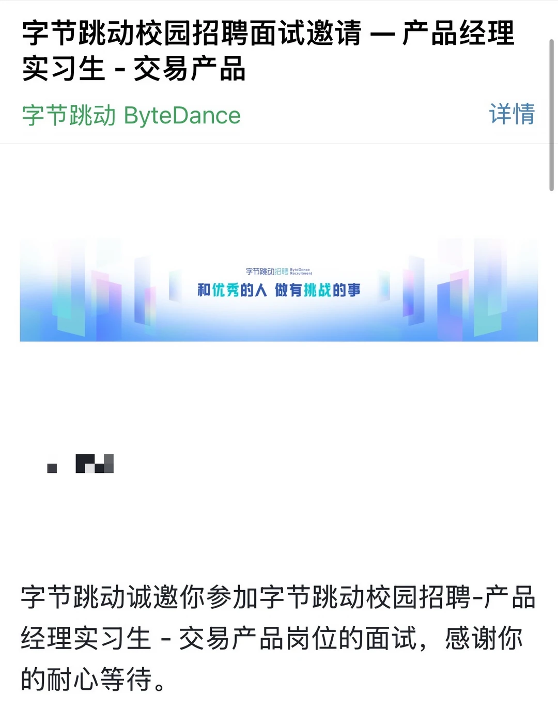
字节跳动校园招聘面试邀请 一 产品经理 实习生-交易产品 字节跳动 ByteDance 详情 字节跳动招聘 RyteDancet 和优秀的人做有挑战的事 字节跳动诚邀你参加字节跳动校园招聘-产品 经理实习生-交易产品岗位的面试，感谢你 的耐心等待。
OCR 由机器生成，可能存在识别错误，请以原图为准。
images/🌟 一面 · 你提到要提升‘渗透率’和‘转化率’，这两个指标具体怎么定义？ · 转化漏斗最大的流失环节是什么？为什么会这样？你们分析过原因吗？ · 如果要在支付环节提升转化，你会接入哪些新支付方式？为什么当时没有这么做？ · 你能讲一下抽成这个项目的背景和实现过程吗？ · 这个规则是谁决定的？财务还是业务方？ · 你们和竞品有何不同？你们的优势在哪？飞书有没有必要做类似的产品？ · 你为什么想转向支付产品？ · 你了解哪些国内外数字钱包？有哪些做得好的？ 🌟 二面 · 请介绍你在某司的实习经历？主要做什么？ · 相比竞品，你们可能走哪些差异化路线？为什么你们更有优势？ · 如果要评价某能力，你会建立怎样的指标体系？ · 你认为做好产品经理需要哪些特质？ · 除了应对已有需求外，还需要什么？ · 实习中遇到最困难的问题是什么？ · 学生思维和工作思维的核心区别是什么？ · 再往下挖一层，mindset上的根本区别？ #互联网大厂实习 #面经 #产品经理面试 #字节
Date: 04.19 安节国际支付 面经 -Text Note
OCR 由机器生成，可能存在识别错误，请以原图为准。
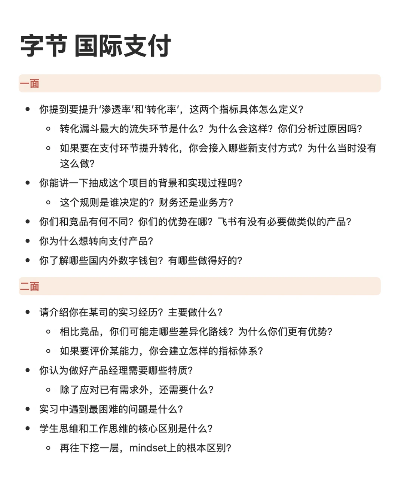
字节 国际支付 面 ● 你提到要提升’渗透率’和’转化率，这两个指标具体怎么定义? 。 转化漏最大的流失环节是什么？为什么会这样？你们分析过原因吗? 。 如果要在支付环节提升转化，你会接入哪些新支付方式？为什么当时没有 - 这么做？ ⚫ 你能讲下抽成这个项目的背景和实现过程吗？ 。这个规则是谁决定的？财务还是业务? ⚫ 你们和竞品有何不同？你们的优势在哪？书有没有必要做类似的产品？ ⚫ 你为什么想转向付产品? ⚫ 你了解哪些国内外数字钱包？有哪些做得好的？ 二面 ⚫ 请介绍你在某司的实习经历？主要做什么? 。相比竞品，你们可能哪些差异化路线？为什么你们更有优势？ 。如果要评价某能力，你会建怎样的指标体系？ • 你认为做好产品经理需要哪些特质? 。除了应对已有需求外，还需要什么？ • 实习中遇到最困难的问题是什么? ⚫ 学生思维和工作思维的核区别是什么? 。再往下挖层，mindset上的根本区别?
OCR 由机器生成，可能存在识别错误，请以原图为准。
images/国际支付—收银产品经理实习生 🕑Timeline：6.11被捞—6.15一面—6.16挂 📝面经36min 1️⃣第一部分：面试官介绍+自我介绍 2️⃣第二部分（强业务场景提问）： 1. 详细介绍商品下单到支付链路的整体流程 2. 假设作为收银台产品经理，核心指标是支付转化率（PSR），当 PSR 突然下跌10%，且排除产研发版、银行及其他营销活动、大促节点等因素，如何排查原因 3. 在已知是微信支付方式跳转时渠道提供的支付接口成功回调大量延迟，且微信修复需两周时间的情况下，如何最大化提升 PSR 4. 针对信用支付在大额场景下因风控策略迭代导致用户支付失败的情况，如何要求风控完善策略以尽量不误伤普通用户 5.tiktok支付涉及数字码生成，用银行app支付。在这个跳转链路中用户流失如何二次触达，设计订单流失召回策略 6.用户没有完成订单的原因可能有哪些 7.对支付流程中，钱的流转过程的了解有哪些 3️⃣第三部分：个人层面 1.（英文）你为什么想来做收银相关的工作 2.（英文）你觉得你在这个岗位上面临到的最大的挑战是什么，你如何快速学习相关信息 3.你觉得你工作上的一个缺点是什么 4.实习时间实习地点确认 4️⃣第四部分：反问 1.询问这个岗位最看重的能力是什么【沟通+数据分析】 #产品经理面试 #字节面经 #产品面经
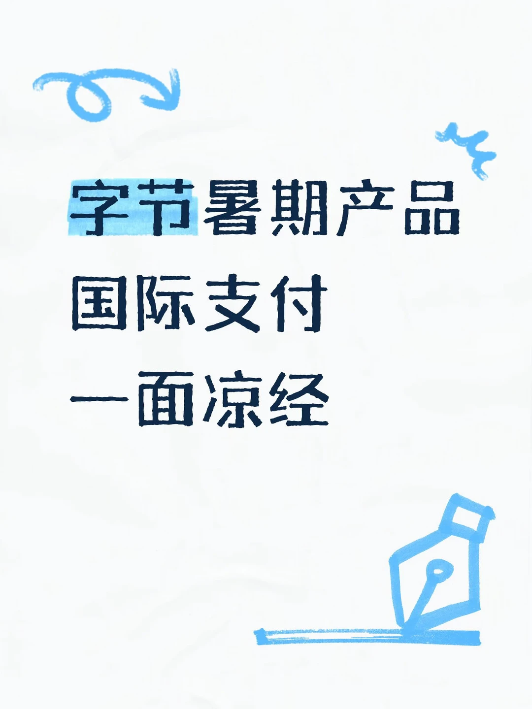
字节暑期产品 国际支付 一面凉经
OCR 由机器生成，可能存在识别错误，请以原图为准。